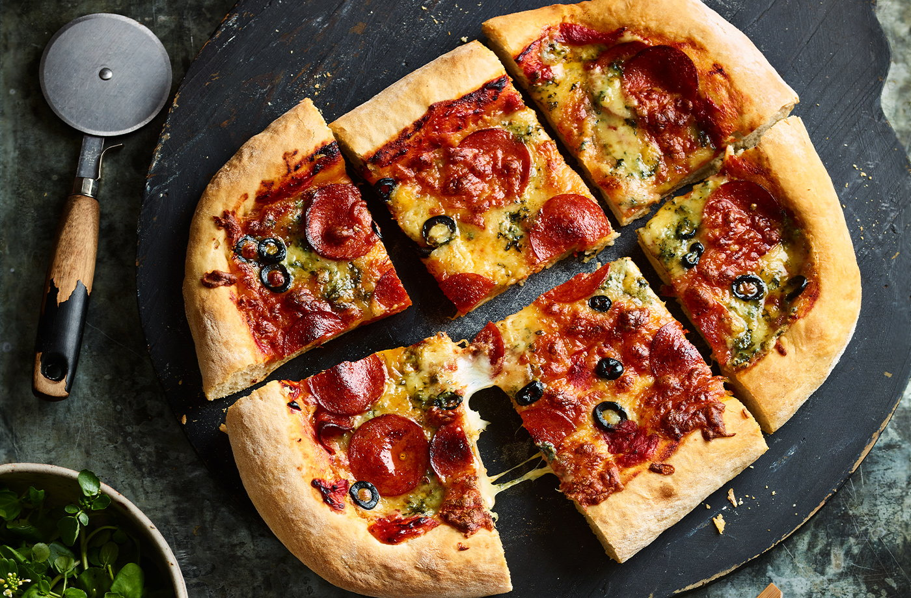

Pepperoni, mozzarella and blue cheese pizzas recipe

Deep pan, square and topped with mountains of melty blue cheese, this
Detroit-style pizza will soon become one of your favourite fakeaways.
The best thing? It's ready in under an hour.
Ingredients
- 3 x 145g packs pizza base mix
- plain flour, for dusting
- oil, for greasing
- 200g jar tomato and herb pizza sauce
- 75g grated mozzarella
- 60g pizza pepperoni slices (from a 120g pack)
- 50g blue stilton, crumbled
- 100g pizza mozzarella, grated
- 2 black olives, sliced
Method
-
Put the pizza base mixes in a large bowl and stir in 300ml lukewarm
water. Mix to a soft dough, then knead well on a lightly floured
surface for 5 mins or until smooth.
-
Preheat the oven to gas 7, 220 ̊C, fan 200 ̊C and grease a large
baking sheet (about 30 x 37cm). Roll out the dough to roughly the
same shape as the baking sheet. Place on the sheet, cover with a tea
towel and leave to rise for 10 mins. Press the edges of the dough,
about 2cm from the edge, gently towards the sides of the sheet to
create a thicker crust. Be careful not to create any holes.
-
Spread over the tomato sauce and scatter over the grated mozzarella,
pepperoni, blue cheese and olives. Bake for 15-20 mins until golden
and crisp, then cut into squares to serve.